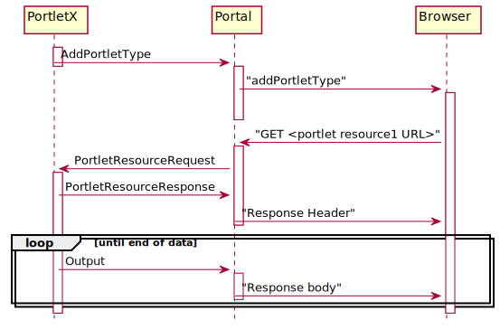

public class AddPortletType extends PortalCommand
Adds a portlet type with its global resources (JavaScript and/or CSS)
to the portal page. Specifying global resources result in the respective
<link .../> or <script ...></script> nodes
being added to the page’s <head> node.
This in turn causes the browser to issue GET request that
(usually) refer to the portlet’s resources. These requests are
converted to PortletResourceRequests by the portal and
sent to the portlets, which must respond to the requests.
The sequence of events is shown in the diagram.

See ResourceRequest for details about the processing
of the PortletResourceRequest.
A portelt’s JavaScript may (and probably must) make use of the functions provided by the portal page. See the JavaScript documentation of these functions for details.
| Constructor and Description |
|---|
AddPortletType(String portletType)
Create a new event for the given portlet type.
|
| Modifier and Type | Method and Description |
|---|---|
AddPortletType |
addCss(RenderSupport renderSupport,
URI uri)
Add the URI of a CSS resource that is to be added to the
header section of the portal page.
|
AddPortletType |
addScript(AddPageResources.ScriptResource scriptResource)
Add a script resource to be requested by the browser.
|
URI[] |
cssUris()
Return all CSS URIs.
|
String |
displayName()
Return the display name.
|
boolean |
isInstantiable()
Return if the portelt is instantiable.
|
String |
portletType()
Return the portlet type.
|
AddPageResources.ScriptResource[] |
scriptResources()
Return all script resources.
|
AddPortletType |
setDisplayName(String displayName)
Sets the display name.
|
AddPortletType |
setInstantiable()
Mark the portlet type as instantiable.
|
void |
toJson(Writer writer)
Writes the event as JSON notification to the given writer.
|
toJsondefaultCriterion, handlingError, isEligibleFor, toStringaddCompletionEvent, associated, cancel, channels, channels, completionEvents, currentResults, enqueued, forChannels, get, get, handled, isCancelled, isDone, isStopped, results, results, setAssociated, setChannels, setResult, stop, tieToclone, equals, finalize, getClass, hashCode, notify, notifyAll, wait, wait, waitassociated, associated, associatedpublic AddPortletType(String portletType)
Create a new event for the given portlet type.
portletType - a unique id for the portklet type (usually
the class name)public String portletType()
Return the portlet type.
public AddPortletType setDisplayName(String displayName)
Sets the display name.
displayName - the display namepublic String displayName()
Return the display name.
public AddPortletType setInstantiable()
Mark the portlet type as instantiable.
public boolean isInstantiable()
Return if the portelt is instantiable.
public AddPortletType addScript(AddPageResources.ScriptResource scriptResource)
Add a script resource to be requested by the browser.
scriptResource - the script resourcepublic AddPortletType addCss(RenderSupport renderSupport, URI uri)
Add the URI of a CSS resource that is to be added to the header section of the portal page.
renderSupport - the render support for mapping the uriuri - the URIpublic AddPageResources.ScriptResource[] scriptResources()
Return all script resources.
public void toJson(Writer writer)
PortalCommandWrites the event as JSON notification to the given writer.
Derived classes usually simply call
PortalCommand.toJson(Writer, String, Object...) with the method
name and parameters.
toJson in class PortalCommandwriter - the writer